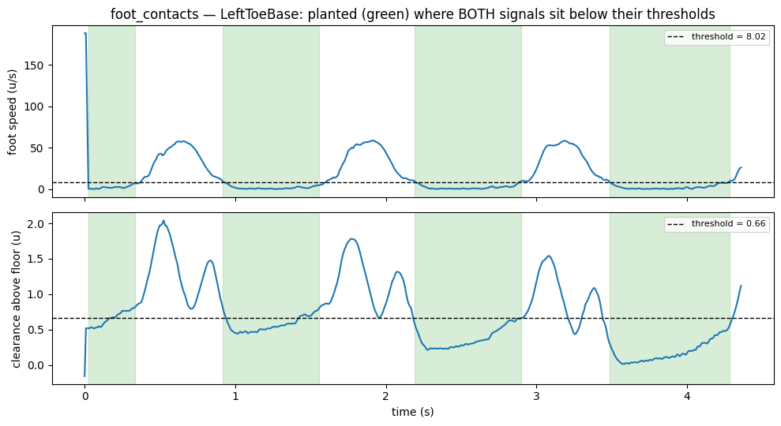
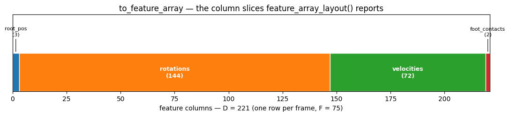

Feature Export¶
Batch loading¶
from pybvh import read_bvh_directory, batch_to_numpy
clips = read_bvh_directory("dataset/", parallel=True)
data = batch_to_numpy(clips, representation="6d", pad=True) # (B, F_max, D)
Supported representations: "euler", "quat", "6d", "axisangle", "rotmat".
When pad=False (default), returns a list of arrays with different frame counts. When pad=True, zero-pads to the longest clip and returns a single (B, F_max, D) array.
For datasets with occasional corrupt files, pass skip_errors=True — failing loads emit a UserWarning and are skipped rather than crashing the whole call.
Harmonizing datasets¶
Clips from heterogeneous sources typically differ in skeleton topology, frame rate, up-axis convention, and per-joint Euler order. Unify all of them in one call before batching:
from pybvh import batch
reference = pybvh.read_bvh_file("reference_skeleton.bvh")
clips = batch.harmonize(
raw_clips,
reference=reference, # retarget all clips to this skeleton's bone offsets
target_fps=30.0, # resample via SLERP when fps differs by > 0.01
target_world_up="+z", # rotate into a common up axis
target_euler_order="XYZ", # re-express joint angles in a uniform Euler order
on_incompatible="drop", # or "raise" for strict mode
verbose=True, # one summary UserWarning at end of call when drops occur
)
Any of reference / target_fps / target_world_up / target_rest_up / target_rest_forward / target_euler_order can be None to skip that stage. Stages run in the order topology-gate → retarget → resample → world_up → rest_up → rest_forward → euler_order. Clips that fail the topology gate against reference are either dropped with a single summary UserWarning at end of call or raise ValueError depending on on_incompatible.
Pass return_report=True for a JSON-serializable HarmonizeReport describing every transformation applied to every kept clip:
clips, report = batch.harmonize(raw_clips, reference=reference,
target_fps=30.0, return_report=True)
# Audit trail
print(f"Kept {len(report.kept_indices)} / dropped {len(report.dropped_indices)}")
for src, stages in zip(report.kept_sources, report.applied_stages):
print(src, stages) # e.g. ('/data/clip_0001.bvh', {'resample': '24→30'})
# Embed alongside the preprocessed dataset
import json, dataclasses
metadata = json.dumps(dataclasses.asdict(report))
Checking compatibility¶
For ad-hoc filtering without invoking harmonize, pybvh exposes three predicates on Bvh:
a.matches_hierarchy(b)— joint names, parent structure, and rest offsets match (withinatol). Passmatch_offsets=Falseto ignore bone proportions, e.g. when retargeting is about to overwrite them. Use this gate when batching to rotation-invariant representations ('6d','quat','rotmat') where channel layout is irrelevant.a.matches_channels(b)— per-joint Euler rotation orders and root position-channel order match. Use in addition tomatches_hierarchywhen batching to'euler'or'axisangle', where the channel layout depends on the source Euler order.a.matches_topology(b)— conjunction of both. Use when every aspect must align.
batch_to_numpy picks the right predicate automatically based on the requested representation, and emits actionable error messages (with source_path where available) when a clip diverges from the reference.
Motion features¶
Each feature captures a different aspect of the motion. Choose based on what your model needs:
vel = bvh.joint_velocities() # (F, J, 3) in units/second (non-end-site joints)
acc = bvh.joint_accelerations() # (F, J, 3)
ang_vel = bvh.angular_velocities() # (F, J, 3) in radians/second
# Per-node variants include end sites — useful for extremity tracking
vel_all = bvh.node_velocities() # (F, N, 3) — joints + end sites
acc_all = bvh.node_accelerations() # (F, N, 3)
traj = bvh.root_trajectory() # (F, 4) ground pos + heading
contacts = bvh.foot_contacts() # (F, num_feet) binary labels
Defaults are stencil="central", pad="edge" on the velocity-like functions — central differences at interior frames + one-sided at boundaries, output shape equals input. Pass stencil="forward", pad="none" for strict forward differences matching pre-v3 pybvh ((F-1, ...) / (F-2, ...)); stencil="central", pad="none" drops both boundaries symmetrically.
| Feature | What it captures | Common use |
|---|---|---|
| Joint velocities | How fast each joint moves in 3D space (finite differences of FK positions) | Motion dynamics, action recognition |
| Joint accelerations | Rate of velocity change per joint | Smoothness constraints, jerk detection |
| Angular velocities | Per-joint rotation speed via rotation matrix log map | Rotation dynamics, independent of skeleton scale |
| Root trajectory | Ground-plane position (2D) + heading as sin/cos (2D) | Locomotion conditioning, path prediction |
| Foot contacts | Binary per-frame indicators (combined velocity + height by default; see method=) |
Contact-aware generation, foot skating loss |
What the contact detector actually thresholds — foot speed and clearance above the floor, ANDed (green spans = detected stance):

For root-relative positions, use bvh.node_positions(centered='skeleton').
One-stop feature export¶
Combines rotations, velocities, and foot contacts into a single flat array:
features = bvh.to_feature_array(
representation="6d",
include_velocities=True,
include_foot_contacts=True,
) # (F, D) flat array under default stencil="central", pad="edge"
Use bvh.feature_array_layout(...) to get {block_name: slice} for unpacking the flat array back into root_pos / rotations / velocities / foot_contacts blocks — this is the column layout of the exact call above:

Normalization¶
Per-channel z-score normalization (dataset mean/std statistics, apply, reverse) is an ML-pipeline concern and moved to pybvh-ml in v0.8.0:
The functions behave exactly as they used to in pybvh.batch — same stats dict (mean, std, constant_channels), same z-score math.
Skeleton metadata¶
Useful for graph-based models (GCNs, attention masks):
bvh.euler_orders # ['ZYX', 'ZYX', ...] per joint
bvh.edges # [(1, 0), (2, 1), ...] for GCN adjacency
bvh.joint_names # ['Hips', 'Spine', ...]
bvh.joint_count # 24
For full ML workflows
pybvh-ml provides tensor packing (CTV/TVC layouts), PyTorch Datasets, augmentation pipelines, and preprocessing to HDF5/npz.
See also
Gallery — foot contacts, root_trajectory, and the feature-array layout drawn (section 5) · Features API and Batch API — full signatures · Choosing a Representation — which rotation block to export